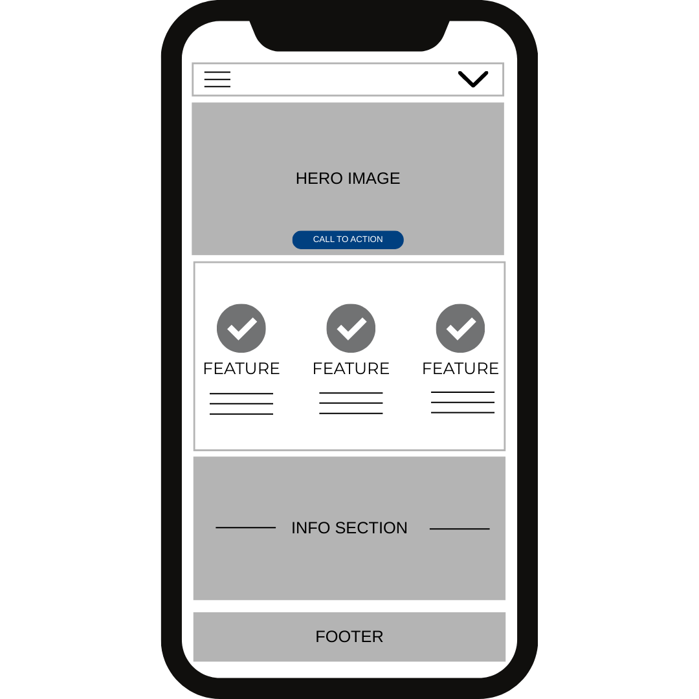

Mobile View
This wireframe represents the mobile-first layout of the home page. Content is stacked vertically to support scrolling and usability on small screens.
The layout includes a header with navigation, a hero section, service information, a call-to-action area, and footer content.